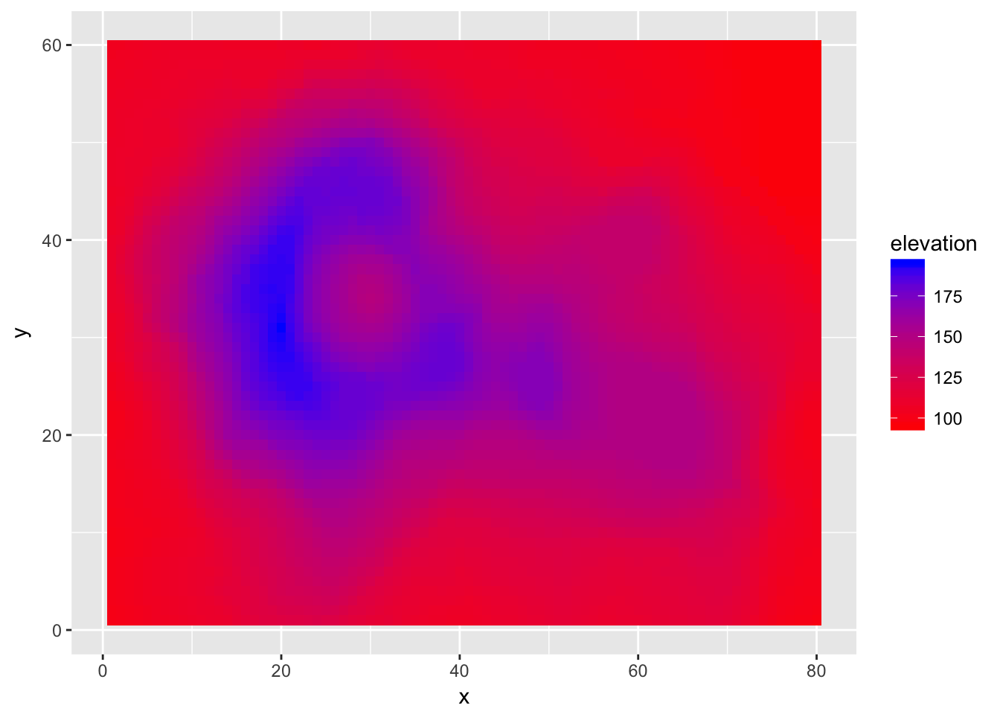
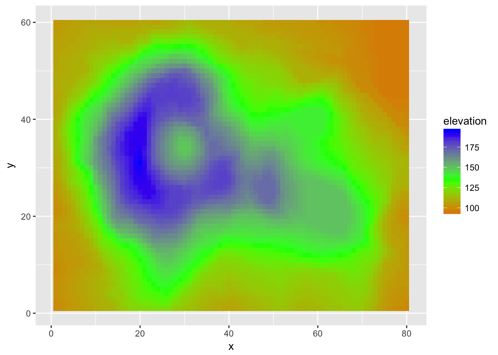
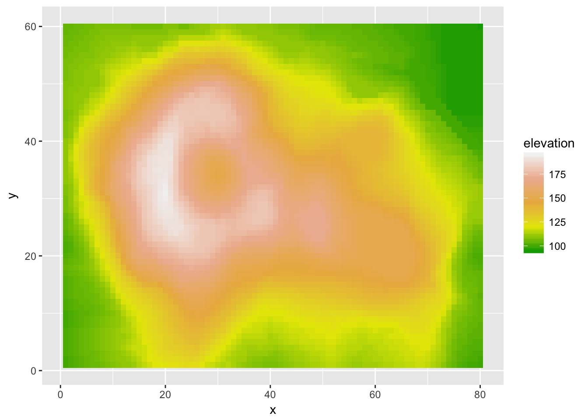
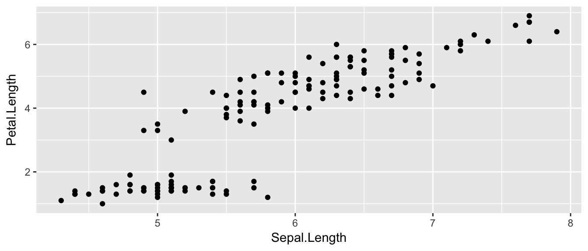
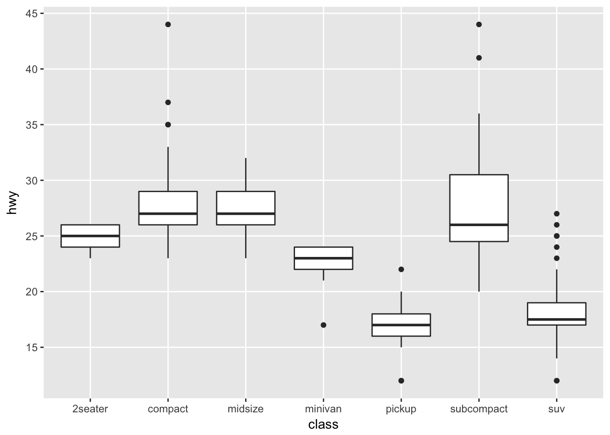
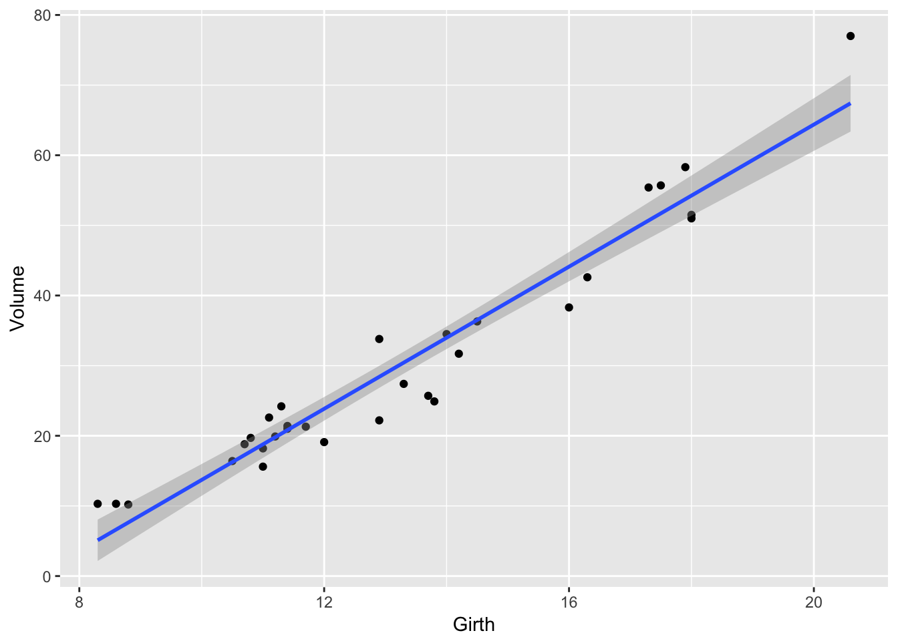
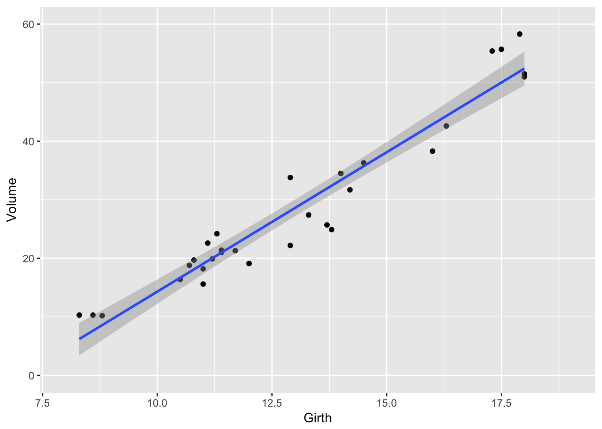

Chapter 1 Introduction
This first chapter will serve as a “crash course” in R and we will superficially introduce data.frames, simple data manipulations and graphing, and producing a reasonable document for your output. These topics will each be covered in greater detail, but it is helpful to get the basic ideas first.
R is a open-source program that is commonly used in Statistics. It runs on almost every platform and is completely free and is available at www.r-project.org. Most of the cutting-edge statistical research is first available on R.
R is a script based language, so there is no point and click interface. (Actually there are packages that attempt to provide a point and click interface, but they are still somewhat primitive.) While the initial learning curve will be steeper, understanding how to write scripts will be valuable because it leaves a clear description of what steps you performed in your data analysis. Typically you will want to write a script in a separate file and then run individual lines. The saves you from having to retype a bunch of commands and speeds up the debugging process.
Finding help about a certain function is very easy. At the prompt, just type help(function.name) or ?function.name. If you don’t know the name of the function, your best bet is to go the the web page www.rseek.org which will search various R resources for your keyword(s). Another great resource is the coding question and answer site stackoverflow.
The basic editor that comes with R works fairly well, but you should consider running R through the program RStudio which is located at rstudio.com. This is a completely free Integrated Developement Environment that works on Macs, Windows and a couple of flavors of Linux. It simplifies a bunch of more annoying aspects of the standard R GUI and supports things like tab completion.
When you first open up R (or RStudio) the console window gives you some information about the version of R you are running and then it gives the prompt >. This prompt is waiting for you to input a command. The prompt + tells you that the current command is spanning multiple lines. In a script file you might have typed something like this:
for( i in 1:5 ){
print(i)
}But when you copy and paste it into the console in R you’ll see something like this:
> for (i in 1:5){
+ print(i)
+ }If you type your commands into a file, you won’t type the > or + prompts. For the rest of the tutorial, I will show the code as you would type it into a script and I will show the output being shown with two hashtags (##) before it to designate that it is output.
1.1 R as a simple calculator
Assuming that you have started R on whatever platform you like, you can use R as a simple calculator. At the prompt, type 2+3 and hit enter. What you should see is the following
# Some simple addition
2+3## [1] 5In this fashion you can use R as a very capable calculator.
6*8## [1] 484^3## [1] 64exp(1) # exp() is the exponential function## [1] 2.718282R has most constants and common mathematical functions you could ever want. sin(), cos(), and other trigonometry functions are available, as are the exponential and log functions exp(), log(). The absolute value is given by abs(), and round() will round a value to the nearest integer.
pi # the constant 3.14159265...## [1] 3.141593sin(0)## [1] 0log(5) # unless you specify the base, R will assume base e## [1] 1.609438log(5, base=10) # base 10## [1] 0.69897Whenever I call a function, there will be some arguments that are mandatory, and some that are optional and the arguments are separated by a comma. In the above statements the function log() requires at least one argument, and that is the number(s) to take the log of. However, the base argument is optional. If you do not specify what base to use, R will use a default value. You can see that R will default to using base \(e\) by looking at the help page (by typing help(log) or ?log at the command prompt).
Arguments can be specified via the order in which they are passed or by naming the arguments. So for the log() function which has arguments log(x, base=exp(1)). If I specify which arguments are which using the named values, then order doesn’t matter.
# Demonstrating order does not matter if you specify
# which argument is which
log(x=5, base=10) ## [1] 0.69897log(base=10, x=5)## [1] 0.69897But if we don’t specify which argument is which, R will decide that x is the first argument, and base is the second.
# If not specified, R will assume the second value is the base...
log(5, 10)## [1] 0.69897log(10, 5)## [1] 1.430677When I specify the arguments, I have been using the name=value notation and a student might be tempted to use the <- notation here. Don’t do that as the name=value notation is making an association mapping and not a permanent assignment.
1.2 Assignment
We need to be able to assign a value to a variable to be able to use it later. R does this by using an arrow <- or an equal sign =. While R supports either, for readability, I suggest people pick one assignment operator and stick with it. I personally prefer to use the arrow. Variable names cannot start with a number, may not include spaces, and are case sensitive.
tau <- 2*pi # create two variables
my.test.var = 5 # notice they show up in 'Environment' tab in RStudio!
tau## [1] 6.283185my.test.var## [1] 5tau * my.test.var## [1] 31.41593As your analysis gets more complicated, you’ll want to save the results to a variable so that you can access the results later. If you don’t assign the result to a variable, you have no way of accessing the result.
1.3 Data frames
Matrices are great for mathematical operations, but I also want to be able to store data that is numerical. For example I might want to store a categorical variable such as manufacturer brand. To generalize our concept of a matrix to include these types of data, We want a way of storing data where it feels just as if we had an Excel Spreadsheet where each row represents an observation and each column represents some information about that observation. We will call this object a data.frame.
Perhaps the easiest way to understand data frames is to create one. We will create a data.frame that represents an instructor’s grade book, where each row is a student, and each column represents some sort of assessment.
Grades <- data.frame(
Name = c('Bob','Jeff','Mary','Valerie'),
Exam.1 = c(90, 75, 92, 85),
Exam.2 = c(87, 71, 95, 81)
)
# Show the data.frame
# View(Grades) # show the data in an Excel-like tab. Doesn't work when knitting
Grades # show the output in the console. This works when knitting## Name Exam.1 Exam.2
## 1 Bob 90 87
## 2 Jeff 75 71
## 3 Mary 92 95
## 4 Valerie 85 81R allows two differnt was to access elements of the data.frame. First is a matrix-like notation for accessing particular values.
| Format | Result |
|---|---|
[a,b] |
Element in row a and column b |
[a,] |
All of row a |
[,b] |
All of column b |
Because the columns have meaning and we have given them column names, it is desirable to want to access an element by the name of the column as opposed to the column number. In large Excel spreadsheets I often get annoyed trying to remember which column something was in and muttering “Was total biomass in column P or Q?” A system where I could just name the column Total.Biomass and be done with it. This is much nicer to work with and I make fewer dumb mistakes.
Grades[, 2] # print out all of column 2 ## [1] 90 75 92 85Grades$Name # The $-sign means to reference a column by its label## [1] Bob Jeff Mary Valerie
## Levels: Bob Jeff Mary ValerieUsually we won’t type the data in by hand, but rather load the data from some package.
1.4 Packages
One of the greatest strengths about R is that so many people have devloped add-on packages to do some additional function. For example, plant community ecologists have a large number of multivariate methods that are useful but were not part of R. So Jari Oksanen got together with some other folks and put together a package of functions that they found useful. The result is the package vegan.
To download and install the package from the Comprehensive R Archive Network (CRAN), you just need to ask RStudio it to install it via the menu Tools -> Install Packages.... Once there, you just need to give the name of the package and RStudio will download and install the package on your computer.
Many major analysis types are available via downloaded packages as well as problem sets from various books (e.g. Sleuth3 or faraway) and can be easily downloaded and installed via the menu.
Once a package is downloaded and installed on your computer, it is available, but it is not loaded into your current R session by default. The reason it isn’t loaded is that there are thousands of packages, some of which are quite large and only used occasionally. So to improve overall performance only a few packages are loaded by default and the you must explicitly load packages whenever you want to use them. You only need to load them once per session/script.
library(vegan) # load the vegan libraryFor a similar performance reason, many packages do not automatically load their datasets unless explicitly asked. Therefore when loading datasets from a package, you might need to do a two-step process of loading the package and then loading the dataset.
library(faraway) # load the package into memory##
## Attaching package: 'faraway'## The following object is masked from 'package:lattice':
##
## melanomadata("butterfat") # load the dataset into memoryIf you don’t need to load any functions from a package and you just want the datasets, you can do it in one step.
data('butterfat', package='faraway') # just load the dataset, not anything else
butterfat[1:6, ] # print out the first 6 rows of the data## Butterfat Breed Age
## 1 3.74 Ayrshire Mature
## 2 4.01 Ayrshire 2year
## 3 3.77 Ayrshire Mature
## 4 3.78 Ayrshire 2year
## 5 4.10 Ayrshire Mature
## 6 4.06 Ayrshire 2year1.5 Summarizing Data
It is very important to be able to take a data set and produce summary statistics such as the mean and standard deviation of a column. For this sort of manipulation, I use the package dplyr. This package allows me to chain together many common actions to form a particular task.
The foundational operations to perform on a data set are:
Subsetting - Returns a with only particular columns or rows
–
select- Selecting a subset of columns by name or column number.–
filter- Selecting a subset of rows from a data frame based on logical expressions.–
slice- Selecting a subset of rows by row number.arrange- Re-ordering the rows of a data frame.mutate- Add a new column that is some function of other columns.summarise- calculate some summary statistic of a column of data. This collapses a set of rows into a single row.
Each of these operations is a function in the package dplyr. These functions all have a similar calling syntax, the first argument is a data set, subsequent arguments describe what to do with the input data frame and you can refer to the columns without using the df$column notation. All of these functions will return a data set.
The dplyr package also includes a function that “pipes” commands together. The pipe command %>% allows for very readable code. The idea is that the %>% operator works by translating the command a %>% f(b) to the expression f(a,b). This operator works on any function and was introduced in the magrittr package. The beauty of this comes when you have a suite of functions that takes input arguments of the same type as their output. For example if we wanted to start with x, and first apply function f(), then g(), and then h(), the usual R command would be h(g(f(x))) which is hard to read because you have to start reading at the innermost set of parentheses. Using the pipe command %>%, this sequence of operations becomes x %>% f() %>% g() %>% h().
library(dplyr) # load the dplyr package!
Grades # Recall the Grades data ## Name Exam.1 Exam.2
## 1 Bob 90 87
## 2 Jeff 75 71
## 3 Mary 92 95
## 4 Valerie 85 81# The following code takes the Grades data.frame and calculates
# a column for the average exam score, and then sorts the data
# according to the that average score
Grades %>%
mutate( Avg.Score = (Exam.1 + Exam.2) / 2 ) %>%
arrange( Avg.Score )## Name Exam.1 Exam.2 Avg.Score
## 1 Jeff 75 71 73.0
## 2 Valerie 85 81 83.0
## 3 Bob 90 87 88.5
## 4 Mary 92 95 93.5Next we consider the summarization function to calculate the mean score for Exam.1. Notice that this takes a data frame of four rows, and summarizes it down to just one row that represents the summarized data for all four students.
Grades %>%
summarize( Exam.1.mean = mean( Exam.1 ) )## Exam.1.mean
## 1 85.5Similarly you could calculate the standard deviation for the exam as well.
Grades %>%
summarize( Exam.1.mean = mean( Exam.1 ),
Exam.1.sd = sd( Exam.1 ) )## Exam.1.mean Exam.1.sd
## 1 85.5 7.593857Recall the butterfat data we loaded earlier.
butterfat[1:6, ] # only the first 6 observations## Butterfat Breed Age
## 1 3.74 Ayrshire Mature
## 2 4.01 Ayrshire 2year
## 3 3.77 Ayrshire Mature
## 4 3.78 Ayrshire 2year
## 5 4.10 Ayrshire Mature
## 6 4.06 Ayrshire 2yearWe have 100 observations for different breeds of cows and different ages. We might want to find the mean and standard deviation of the butterfat content for each breed. To do this, we are still going to use the summarize, but we will precede that with group_by(Breed) to tell the subsequent dplyr functions to perform the actions separately for each breed.
butterfat %>%
group_by( Breed ) %>%
summarise( Mean = mean(Butterfat),
Std.Dev = sd(Butterfat) )## # A tibble: 5 x 3
## Breed Mean Std.Dev
## <fct> <dbl> <dbl>
## 1 Ayrshire 4.06 0.261
## 2 Canadian 4.44 0.366
## 3 Guernsey 4.95 0.483
## 4 Holstein-Fresian 3.67 0.259
## 5 Jersey 5.29 0.5991.6 Graphing Data
There are three major “systems” of making graphs in R. The basic plotting commands in R are quite effective but the commands do not have a way of being combined in easy ways. Lattice graphics (which the mosaic package uses) makes it possible to create some quite complicated graphs but it is very difficult to do make non-standard graphs. The last package, ggplot2 tries to not anticipate what the user wants to do, but rather provide the mechanisms for pulling together different graphical concepts and the user gets to decide which elements to combine.
To make the most of ggplot2 it is important to wrap your mind around “The Grammar of Graphics”. Briefly, the act of building a graph can be broken down into three steps.
Define what data we are using.
What is the major relationship we wish to examine?
In what way should we present that relationship? These relationships can be presented in multiple ways, and the process of creating a good graph relies on building layers upon layers of information. For example, we might start with printing the raw data and then overlay a regression line over the top.
Next, it should be noted that ggplot2 is designed to act on data frames. It is actually hard to just draw three data points and for simple graphs it might be easier to use the base graphing system in R. However for any real data analysis project, the data will already be in a data frame and this is not an annoyance.
One way that ggplot2 makes it easy to form very complicated graphs is that it provides a large number of basic building blocks that, when stacked upon each other, can produce extremely complicated graphs. A full list is available at http://docs.ggplot2.org/current/ but the following list gives some idea of different building blocks. These different geometries are different ways to display the relationship between variables and can be combined in many interesting ways.
| Geom | Description | Required Aesthetics |
|---|---|---|
geom_histogram |
A histogram | x |
geom_bar |
A barplot | x |
geom_density |
A density plot of data. (smoothed histogram) | x |
geom_boxplot |
Boxplots | x, y |
geom_line |
Draw a line (after sorting x-values) | x, y |
geom_path |
Draw a line (without sorting x-values) | x, y |
geom_point |
Draw points (for a scatterplot) | x, y |
geom_smooth |
Add a ribbon that summarizes a scatterplot | x, y |
geom_ribbon |
Enclose a region, and color the interior | ymin, ymax |
geom_errorbar |
Error bars | ymin, ymax |
geom_text |
Add text to a graph | x, y, label |
geom_label |
Add text to a graph | x, y, label |
geom_tile |
Create Heat map | x, y, fill |
A graph can be built up layer by layer, where:
- Each layer corresponds to a
geom, each of which requires a dataset and a mapping between an aesthetic and a column of the data set.- If you don’t specify either, then the layer inherits everything defined in the
ggplot()command. - You can have different datasets for each layer!
- If you don’t specify either, then the layer inherits everything defined in the
- Layers can be added with a
+, or you can define two plots and add them together (second one over-writes anything that conflicts).
1.6.1 Bar Charts
Bar charts and histograms are how we think about displaying informtion about a single covariate. That is to say, we are not trying to make a graph of the relationship between \(x\) and \(y\), but rather understanding what values of \(x\) are present and how frequently they show up.
For displaying a categorical variable on the x-axis, a bar chart is a good option. Here we consider a data set that gives the fuel efficiency of different classes of vehicles in two different years. This is a subset of data that the EPA makes available on http://fueleconomy.gov. It contains only model which had a new release every year between 1999 and 2008 and therefore represents the most popular cars sold in the US. It includes information for each model for years 1999 and 2008. The dataset is included in the ggplot2 package as mpg.
data(mpg, package='ggplot2') # load the dataset
str(mpg) # print out what columns are present## Classes 'tbl_df', 'tbl' and 'data.frame': 234 obs. of 11 variables:
## $ manufacturer: chr "audi" "audi" "audi" "audi" ...
## $ model : chr "a4" "a4" "a4" "a4" ...
## $ displ : num 1.8 1.8 2 2 2.8 2.8 3.1 1.8 1.8 2 ...
## $ year : int 1999 1999 2008 2008 1999 1999 2008 1999 1999 2008 ...
## $ cyl : int 4 4 4 4 6 6 6 4 4 4 ...
## $ trans : chr "auto(l5)" "manual(m5)" "manual(m6)" "auto(av)" ...
## $ drv : chr "f" "f" "f" "f" ...
## $ cty : int 18 21 20 21 16 18 18 18 16 20 ...
## $ hwy : int 29 29 31 30 26 26 27 26 25 28 ...
## $ fl : chr "p" "p" "p" "p" ...
## $ class : chr "compact" "compact" "compact" "compact" ...First we could summarize the data by how many models there are in the different classes.
library(ggplot2) # load the ggplot2 package!
ggplot(data=mpg, aes(x=class)) +
geom_bar()
The data set we wish to use is specified using
data=mpg. This is the first argument defined in the function, so you could skip thedata=part if the input data.frame is the first argument.The column in the data that we wish to investigate is defined in the
aes(x=class)part. This means the x-axis will be the car’s class, which is indicated by the column namedclass.The way we want to display this information is using a bar chart.
By default, the geom_bar() just counts the number of cases and displays how many observations were in each factor level. If I have already summarized the data and I just want to make the barchart some height, I would instead use geom_col instead.
1.6.2 Histograms
Histograms also focus on a single variable and give how frequently particular ranges of the data occur.
ggplot(mpg, aes(x=hwy)) +
geom_histogram()## `stat_bin()` using `bins = 30`. Pick better value with `binwidth`.
Just as geom_bar by default calculated the number of observations in each level of my factor of interest, geom_histogram breaks up the x-axis into distinct bins (by default, 30 bins), and then counts how many observations fall into each bin, and displys the number as a bar. To change the number of bins, we could either tell it the number of bins (e.g. bins=20) or the width of each bin (e.g. binwidth=4).
ggplot(mpg, aes(x=hwy)) +
geom_histogram(bins=8) # 8 bins
1.6.3 Scatterplots
There is a famous data set that contains 150 observations from three species of iris. For each observation the length and width of the flowers petals and sepals were measured. This dataset is available in R as iris and is always loaded. We’ll make a very simple scatterplot using the iris dataset that will make a scatterplot of Sepal.Length versus Petal.Length, which are two columns in the data set.
data(iris) # load the iris dataset that comes with R
str(iris) # what columns do we have to play with...## 'data.frame': 150 obs. of 5 variables:
## $ Sepal.Length: num 5.1 4.9 4.7 4.6 5 5.4 4.6 5 4.4 4.9 ...
## $ Sepal.Width : num 3.5 3 3.2 3.1 3.6 3.9 3.4 3.4 2.9 3.1 ...
## $ Petal.Length: num 1.4 1.4 1.3 1.5 1.4 1.7 1.4 1.5 1.4 1.5 ...
## $ Petal.Width : num 0.2 0.2 0.2 0.2 0.2 0.4 0.3 0.2 0.2 0.1 ...
## $ Species : Factor w/ 3 levels "setosa","versicolor",..: 1 1 1 1 1 1 1 1 1 1 ...ggplot( data=iris, aes(x=Sepal.Length, y=Petal.Length) ) +
geom_point( )
The data set we wish to use is specified using
data=iris.The relationship we want to explore is
x=Sepal.Lengthandy=Petal.Length. This means the x-axis will be the Sepal Length and the y-axis will be the Petal Length.The way we want to display this relationship is through graphing 1 point for every observation.
We can define other attributes that might reflect other aspects of the data. For example, we might want for the of the data point to change dynamically based on the species of iris.
ggplot( data=iris, aes(x=Sepal.Length, y=Petal.Length, color=Species) ) +
geom_point( )
The aes() command inside the previous section of code is quite mysterious. The way to think about the aes() is that it gives you a way to define relationships that are data dependent. In the previous graph, the x-value and y-value for each point was defined dynamically by the data, as was the color. If we just wanted all the data points to be colored blue and larger, then the following code would do that
ggplot( data=iris, aes(x=Sepal.Length, y=Petal.Length) ) +
geom_point( color='blue', size=4 )
The important part isn’t that color and size were defined in the geom_point() but that they were defined outside of an aes() function!
Anything set inside an
aes()command will be of the formattribute=Column_Nameand will change based on the data.Anything set outside an
aes()command will be in the formattribute=valueand will be fixed.
1.6.4 Box Plots
Boxplots are a common way to show a categorical variable on the x-axis and continuous on the y-axis.
ggplot(iris, aes(x=Species, y=Petal.Length)) +
geom_boxplot()
The boxes show the \(25^{th}\), \(50^{th}\), and \(75^{th}\) percentile and the lines coming off the box extend to the smallest and largest non-outlier observation.
1.7 Scripts and RMarkdown
One of the worst things about a pocket calculator is there is no good way to go several steps and easily see what you did or fix a mistake (there is nothing more annoying than re-typing something because of a typo. To avoid these issues I always work with script (or RMarkdown) files instead of typing directly into the console. You will quickly learn that it is impossible to write R code correctly the first time and you’ll save yourself a huge amount of work by just embracing scripts (and RMarkdown) from the beginning. Furthermore, having a script file fully documents how you did your analysis, which can help when writing the methods section of a paper. Finally, having a script makes it easy to re-run an analysis after a change in the data (additional data values, transformed data, or removal of outliers).
It often makes your script more readable if you break a single command up into multiple lines. R will disregard all whitespace (including line breaks) so you can safely spread your command over as multiple lines. Finally, it is useful to leave comments in the script for things such as explaining a tricky step, who wrote the code and when, or why you chose a particular name for a variable. The # sign will denote that the rest of the line is a comment and R will ignore it.
1.7.1 R Scripts (.R files)
The first type of file that we’ll discuss is a traditional script file. To create a new .R script in RStudio go to File -> New File -> R Script. This opens a new window in RStudio where you can type commands and functions as a common text editor. Type whatever you like in the script window and then you can execute the code line by line (using the run button or its keyboard shortcut to run the highlighted region or whatever line the curser is on) or the entire script (using the source button). Other options for what piece of code to run are available under the Code dropdown box.
An R script for a homework assignment might look something like this:
# Problem 1
# Calculate the log of a couple of values and make a plot
# of the log function from 0 to 3
log(0)
log(1)
log(2)
x <- seq(.1,3, length=1000)
plot(x, log(x))
# Problem 2
# Calculate the exponential function of a couple of values
# and make a plot of the function from -2 to 2
exp(-2)
exp(0)
exp(2)
x <- seq(-2, 2, length=1000)
plot(x, exp(x))This looks perfectly acceptable as a way of documenting what you did, but this script file doesn’t contain the actual results of commands I ran, nor does it show you the plots. Also anytime I want to comment on some output, it needs to be offset with the commenting character #. It would be nice to have both the commands and the results merged into one document. This is what the R Markdown file does for us.
1.7.2 R Markdown (.Rmd files)
When I was a graduate student, I had to tediously copy and past tables of output from the R console and figures I had made into my Microsoft Word document. Far too often I would realize I had made a small mistake in part (b) of a problem and would have to go back, correct my mistake, and then redo all the laborious copying. I often wished that I could write both the code for my statistical analysis and the long discussion about the interpretation all in the same document so that I could just re-run the analysis with a click of a button and all the tables and figures would be updated by magic. Fortunately that magic now exists.
To create a new R Markdown document, we use the File -> New File -> R Markdown... dropdown option and a menu will appear asking you for the document title, author, and preferred output type. In order to create a PDF, you’ll need to have LaTeX installed, but the HTML output nearly always works and I’ve had good luck with the MS Word output as well.
The R Markdown is an implementation of the Markdown syntax that makes it extremely easy to write webpages and give instructions for how to do typesetting sorts of things. This syntax was extended to allow use to embed R commands directly into the document. Perhaps the easiest way to understand the syntax is to look at an at the RMarkdown website.
The R code in my document is nicely separated from my regular text using the three backticks and an instruction that it is R code that needs to be evaluated. The output of this document looks good as a HTML, PDF, or MS Word document. I have actually created this entire book using RMarkdown.
1.8 Exercises
Create an RMarkdown file that solves the following exercises.
Calculate \(\log\left(6.2\right)\) first using base \(e\) and second using base \(10\). To figure out how to do different bases, it might be helpful to look at the help page for the
logfunction.Calculate the square root of 2 and save the result as the variable named sqrt2. Have R display the decimal value of sqrt2. Hint: use Google to find the square root function. Perhaps search on the keywords “R square root function”.
- This exercise walks you through installing a package with all the datasets used in the textbook The Statistical Sleuth.
- Install the package
Sleuth3on your computer using RStudio. - Load the package using the
library()command. - Print out the dataset
case0101
- Install the package